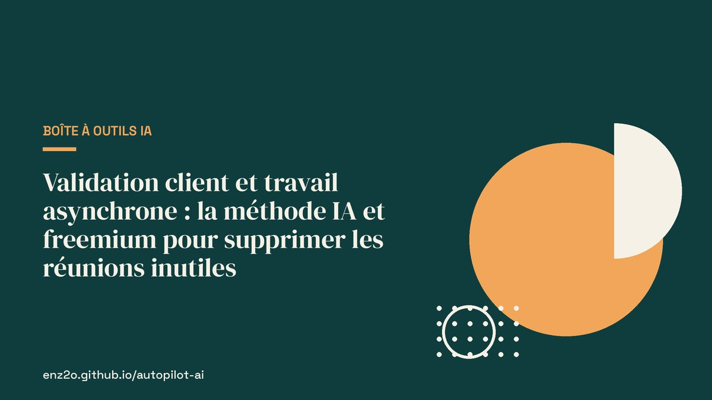

Validation client et travail asynchrone : la méthode IA et freemium pour supprimer les réunions inutiles
2026-11-25
Article contenant des liens affiliés.

Entre les appels de mise au point, les retours clients éparpillés par e-mail ou messagerie et les sessions de clarification interminables, la gestion de projet consomme une partie démesurée du temps des freelances, créateurs et étudiants. Chaque aller-retour non structuré vient interrompre les phases de travail profond et rallonge les délais de livraison.
Pourtant, la majorité des réunions de suivi et de validation peuvent être entièrement supprimées au profit d'un système de travail asynchrone. En couplant l'intelligence artificielle gratuite aux bons logiciels freemium, il est possible de bâtir un parcours fluide : vos interlocuteurs transmettent leurs retours en toute autonomie, et vous traitez les demandes en un temps record sans débourser un euro.
Voici le protocole complet pour mettre en place ce système de validation asynchrone et préserver vos heures de production.
Step 1 : Automatiser la structuration du brief et des besoins
Le principal facteur de réunions inutiles réside dans des consignes de départ floues. Un client ou un collaborateur qui exprime son besoin de manière désordonnée vous oblige à planifier un appel pour recadrer le projet.
Pour éviter cet écueil, transformez la prise de besoin brute en un cahier des charges limpide grâce aux IA génératives (ChatGPT, Claude ou Le Chat Mistral dans leurs versions gratuites) :
- Collectez le besoin brut : Proposez à votre interlocuteur d'enregistrer un court message vocal (via des outils de dictée vocale intégrés ou des enregistreurs gratuits) ou de rédiger quelques lignes à la volée.
- Passez l'information au crible d'un prompt de structuration : Soumettez le texte à l'IA en lui demandant de classer les informations selon quatre axes : objectifs principaux, contraintes techniques, livrables attendus et questions en suspens.
- Validez par écrit : Renvoyez le document structuré au client. Une simple confirmation écrite suffit pour démarrer sur des bases saines, évitant ainsi un appel de cadrage de 45 minutes.
Step 2 : Centraliser les livrables dans un espace dédié à 0 €
Envoyer des fichiers lourds par e-mail ou multiplier les liens de partage sur des dossiers cloud mène inévitablement à la confusion. Pour fluidifier les validations, vous devez offrir à votre client un point d'accès unique et clair pour chaque étape du projet.
C'est ici qu'une solution tout-en-un s'avère particulièrement efficace. Plutôt que de payer plusieurs abonnements pour héberger des documents, créer des formulaires ou structurer des pages de ressources, vous pouvez centraliser cet espace sur une plateforme unique.
En utilisant Systeme.io, vous avez la possibilité de créer gratuitement un espace membre ou un mini-site privé dans lequel vous déposez : - La feuille de route du projet. - Les liens vers les versions de travail. - Un formulaire structuré pour recueillir les demandes de modifications.
Cette approche professionnelle rassure vos interlocuteurs, évite les e-mails perdus et garde l'historique complet des validations au même endroit.
Step 3 : Traiter les retours vidéo et vocaux avec l'IA
Demander des retours écrits détaillés à un client peut parfois être bloquant : manque de temps, explications complexes ou vocabulaire technique mal maîtrisé. La solution la plus efficace consiste à l'inviter à enregistrer son écran (via la version gratuite de Loom ou de Tella) ou à envoyer une note vocale.
Une fois le retour reçu, ne perdez pas de temps à réécouter l'enregistrement plusieurs fois pour prendre des notes :
- Obtenez la transcription : Utilisez un outil de transcription automatique basé sur Whisper (disponible via plusieurs interfaces freemium ou extensions gratuites) pour extraire l'intégralité du texte.
- Synthétisez la liste d'actions avec l'IA : Copiez la transcription dans votre assistant IA avec la consigne suivante : « Extraire uniquement les modifications demandées sous forme de liste à puces actionnable, classée par ordre de priorité. »
Vous obtenez en quelques secondes une feuille de route de corrections claire, débarrassée des hésitations et du bavardage inutile.
Step 4 : Automatiser le suivi et les relances de validation
L'un des plus grands voleurs de temps dans la gestion de projet est l'attente passive. Relancer un client qui a oublié de valider une étape demande de la charge mentale et une rédaction manuelle répétitive.
Pour automatiser cette étape sans dégrader la relation client :
- Configurez une séquence d'e-mails d'information automatisée via Systeme.io. Dès qu'une étape est marquée comme livrée dans votre système, un e-mail part automatiquement pour prévenir le client et lui indiquer le délai de retour souhaité.
- Si aucune réponse n'est enregistrée après 48 ou 72 heures, un rappel courtois est envoyé automatiquement avec le lien direct vers le formulaire de validation.
Ce processus protège vos délais de livraison tout en maintenant un ton professionnel et neutre.
Soigner son environnement pour un travail asynchrone efficace
Travailler de façon asynchrone exige une excellente capacité de concentration. Lorsque vous éliminez les réunions, vous gagnez de longues plages de travail continu (Deep Work). Pour en tirer pleinement parti, l'environnement physique compte tout autant que les logiciels.
Pour maintenir un confort optimal durant ces sessions intensives de production : - Veillez à maintenir une posture saine devant votre écran en utilisant un support ordinateur portable ergonomique réglable. - Isolez-vous des bruits ambiants pour rester immergé dans vos tâches complexes à l'aide d'un casque anti bruit filaire confortable.
Un environnement de travail bien pensé réduit la fatigue physique et vous permet d'expédier vos livrables plus rapidement.
Étape par étape : Votre plan d'action sur 7 jours
Pour mettre en place ce système sans vous laisser déborder, appliquez ce calendrier progressif :
- Jour 1 : Rédigez votre trame de prompt IA pour transformer les notes brutes en briefs structurés.
- Jour 2 : Créez votre espace de livraison gratuit sur Systeme.io avec une structure simple (Brief / Livrables / Formulaire de retours).
- Jour 3 : Préparez deux modèles de messages : un pour inviter le client à faire ses retours en vidéo/vocal, un autre pour récapituler les modifications validées.
- Jour 4 : Testez le workflow sur un projet en cours ou un cas fictif pour vérifier la fluidité des étapes.
- Jour 5 : Informez vos clients ou partenaires de vos nouvelles modalités d'échange asynchrone en mettant en avant le gain de temps et la clarté pour eux.
En remplaçant les réunions systématiques par ce protocole orienté écrit et IA, vous pouvez économiser entre 3 et 6 heures par semaine. Un temps précieux à réinvestir dans votre cœur de métier, vos études ou la création de contenu.